TOPOND
Code examples for TOPOND (topological analysis) is given.
The ‘read_topond()’ method
The read_topond() method is defined in the crystal_io.Properties_output class, which read the formatted output of TOPOND analysis. Currently it reads 2D contour plot data ‘SURF.DAT’ and trajectory data ‘TRAJ.DAT’ and geometry information from standard output.
To apply the correct unit and plotting styles, it is strongly recommended to specify the property name with type option. It can also infer the type from file names.
Depending on the property, the read_topond() function returns to either a child class of the topond.ScalarField or the topond.Trajectory class (see below). It is also saved under the <type> attribute of Properties_output object. If the type is unknown, it is saved under the TOPOND attribute.
[1]:
from CRYSTALpytools.crystal_io import Properties_output
outp = Properties_output('topo_urea.out').read_topond('topo_urea.SURFRHOO')
print('Type: {}'.format(outp.type))
print('Dimension: {} * {}'.format(outp.data.shape[0], outp.data.shape[1]))
Type: SURFRHOO
Dimension: 161 * 161
TOPOND ‘SURF‘ and ‘TRAJ’ files do not contain the full geometry information of system. The standard output is strongly recommended to be added for ‘SURF‘ files and required for ‘TRAJ’ files. The warning message is given due to the missing geometry information for the ‘SURFRHOO’ object.
[2]:
from CRYSTALpytools.crystal_io import Properties_output
obj1 = Properties_output().read_topond('topo_urea.SURFRHOO')
obj2 = Properties_output('topo_urea.out').read_topond('topo_urea.TRAJMOLG')
print('Type: {}'.format(obj2.type))
print('N critical points: {:d}'.format(len(obj2.cpoint)))
print('N trajectories: {:d}'.format(len(obj2.trajectory)))
Type: TRAJMOLG
N critical points: 46
N trajectories: 1346
/tmp/ipykernel_15785/1397384057.py:3: UserWarning: Properties output file not found: Geometry not available
obj1 = Properties_output().read_topond('topo_urea.SURFRHOO')
The ‘topond’ module
So far the topond module is mainly developed for 2D plotting proposes.
Classes based on ‘ScalarField’
The ScalarField class is the basic class for scalar fields obtained by TOPOND. Depending on the specific properties, child classes are generated, which shares similar methods:
ChargeDensity, SpinDensity, Gradient, Laplacian, HamiltonianKE, LagrangianKE, VirialField and ELF.
All the classes are aimed to be independent of dimensionality, but currently only 2D data has been implemented.
NOTE
Though 2D periodicity is supported, it is not suggested as TOPOND plotting frame is not always commensurate with periodic boundary.
Use isovalues to format isovalue strings.
[3]:
from CRYSTALpytools.topond import ChargeDensity
urea = ChargeDensity.from_file('topo_urea.SURFRHOO')
fig = urea.plot_2D(isovalues='%.2f')
/home/huanyu/apps/anaconda3/envs/crystal_py3.9/lib/python3.9/site-packages/CRYSTALpytools/topond.py:330: UserWarning: Properties output file not found: Geometry not available
return Properties_output(output).read_topond(file, 'SURFRHOO')
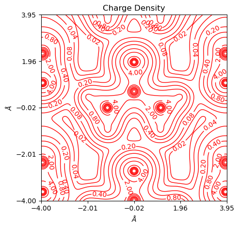
Similarly with the substact method the user can plot difference maps for objects of the same type. By default, positive values are denoted by red, solid lines and negative values by blue, dashed lines. 0 is denoted by the black, solid lines of twice line width.
[4]:
from CRYSTALpytools.topond import ChargeDensity
urea = ChargeDensity.from_file('topo_urea.SURFRHOO')
urea.subtract('topo_ureaPATO.SURFRHOO')
fig = urea.plot_2D(isovalues=None, linewidth=0.5, figsize=[8, 5], a_range=[-1, 1])
/home/huanyu/apps/anaconda3/envs/crystal_py3.9/lib/python3.9/site-packages/CRYSTALpytools/topond.py:330: UserWarning: Properties output file not found: Geometry not available
return Properties_output(output).read_topond(file, 'SURFRHOO')
/home/huanyu/apps/anaconda3/envs/crystal_py3.9/lib/python3.9/site-packages/CRYSTALpytools/topond.py:149: UserWarning: Properties output file not found: Geometry not available
obj = Properties_output().read_topond(i, type=self.type)
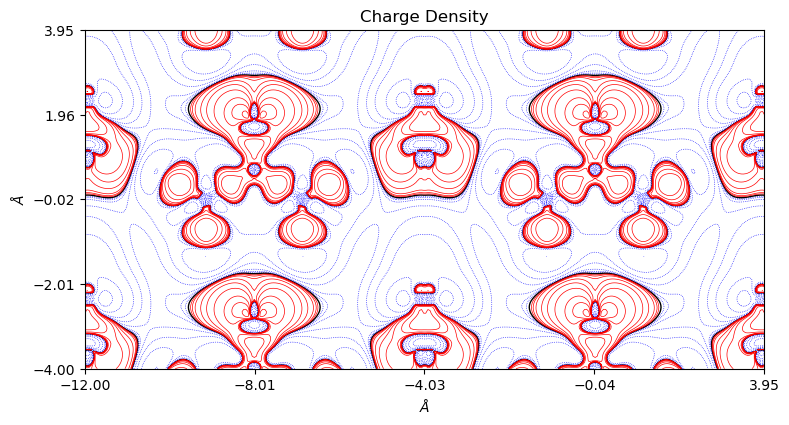
Also possible to customize the levels and get color plots. Also as an illlustration why a_range and b_range are not suggested.
[5]:
from CRYSTALpytools.topond import ELF
import numpy as np
elf = ELF.from_file('topo_urea.SURFELFB', output='topo_urea.out')
fig = elf.plot_2D(colorplot=True, lineplot=False, b_range=[-0.5, 0.5])
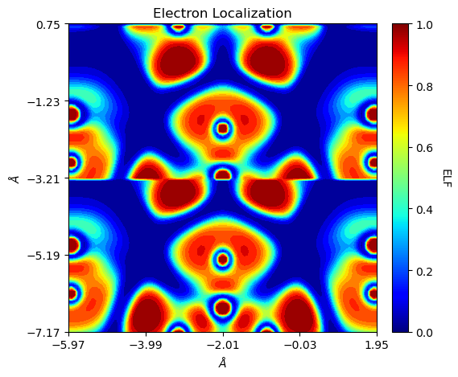
It should be noted that both ‘SURFLAPP’ and ‘SURFLAPM’ files are saved as Laplacian objects. If the file type cannot be inferred from file names, it will be recognized as ‘SURFLAPP’. For the Laplacian class, its plot_2D function accepts a plot_lapm option.
[6]:
from CRYSTALpytools.topond import Laplacian
import numpy as np
levels = np.array([-100., -10., -1., -0.1, -0.01, 0.,
0.01, 0.1, 1., 10., 100.])
lap = Laplacian.from_file('topo_urea.SURFLAPP', output='topo_urea.out')
fig = lap.plot_2D(colorplot=True, lineplot=False, plot_lapm=True, levels=levels)
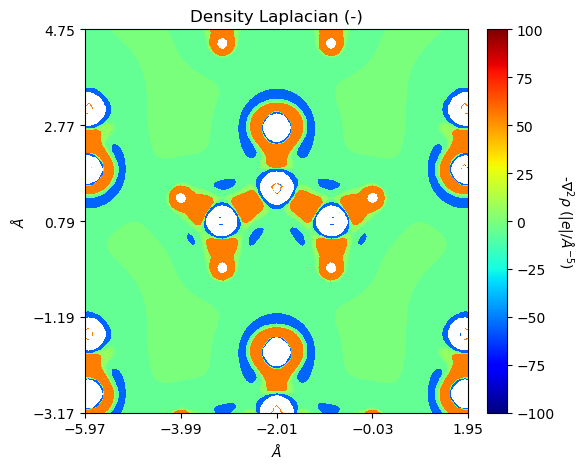
Classes based on ‘Trajectory’
The Trajectory class is the basic class for scalar fields obtained by TOPOND. Depending on the specific properties, child classes are generated which share similar methods:
GradientTraj and ChemicalGraph
All the classes are aimed to get 2D and 3D plots, but currently only 2D plotting has been implemented.
The Trajectory class generally uses the similar method names but is different from ScalarField. To instantiate the object, geometry information from standard output is mandatory.
[7]:
from CRYSTALpytools.topond import ChemicalGraph
mgraph = ChemicalGraph.from_file('topo_urea.TRAJMOLG', output='topo_urea.out')
fig = mgraph.plot_2D()
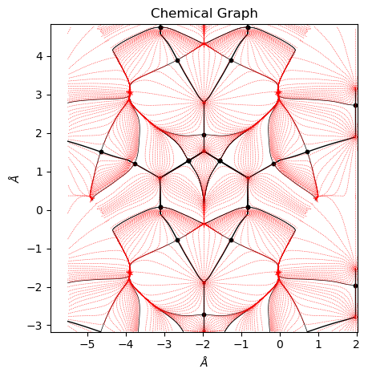
Overlapped plotting
In both ScalarField.plot_2D() and Trajectory.plot_2D() methods, the user can specify the overlay option to get the overlapped 2D surf and molecular graph plots.
[8]:
from CRYSTALpytools.topond import Laplacian, ChemicalGraph
import numpy as np
lapp = Laplacian.from_file('topo_urea.SURFLAPP', output='topo_urea.out')
mgraph = ChemicalGraph.from_file('topo_urea.TRAJMOLG', output='topo_urea.out')
fig = lapp.plot_2D(plot_lapm=True, isovalues=None, overlay=mgraph, figsize=[6, 6],
traj_color='tab:gray', traj_linestyle=':', traj_linewidth=0.5)
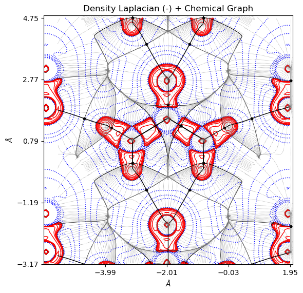
[9]:
from CRYSTALpytools.topond import Gradient, ChemicalGraph
import numpy as np
levels = np.linspace(0, 10, 100)
grho = Gradient.from_file('topo_urea.SURFGRHO', output='topo_urea.out')
mgraph = ChemicalGraph.from_file('topo_urea.TRAJMOLG', output='topo_urea.out')
fig = mgraph.plot_2D(cpt_color='tab:gray', traj_color='tab:gray',
traj_linestyle='-', traj_linewidth=0.5, figsize=[6, 6],
add_title=False, overlay=grho, isovalues=None, levels=levels,
colorplot=True, lineplot=False)
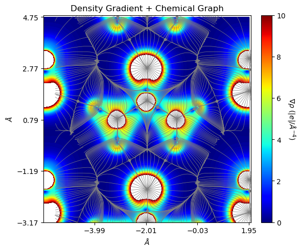
The ‘plot_topond2D’ function
Similar to other modules, the plot_topond2D() function manages multiple objects / files and set the uniform scale for them.
Multiple files plot, return to a figure of subplots. In this case, using the default scale is suggested as it is self-adaptive.
[10]:
from CRYSTALpytools.plot import plot_topond2D
fig = plot_topond2D('topo_urea.SURFRHOO', 'topo_urea.SURFGRHO', 'topo_urea.SURFLAPP',
isovalues=None, figsize=[8, 4], layout=[1, 3])
/home/huanyu/apps/anaconda3/envs/crystal_py3.9/lib/python3.9/site-packages/CRYSTALpytools/plot.py:907: UserWarning: Properties output file not found: Geometry not available
obj.append(Properties_output().read_topond(i, type=type))
/home/huanyu/apps/anaconda3/envs/crystal_py3.9/lib/python3.9/site-packages/CRYSTALpytools/plot.py:907: UserWarning: Properties output file not found: Geometry not available
obj.append(Properties_output().read_topond(i, type=type))
/home/huanyu/apps/anaconda3/envs/crystal_py3.9/lib/python3.9/site-packages/CRYSTALpytools/plot.py:907: UserWarning: Properties output file not found: Geometry not available
obj.append(Properties_output().read_topond(i, type=type))
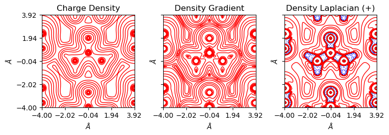
Get the charge difference map with option='diff'.
[11]:
from CRYSTALpytools.plot import plot_topond2D
import numpy as np
levels = np.linspace(-1, 1, 10)
fig = plot_topond2D('topo_urea.SURFRHOO', 'topo_ureaPATO.SURFRHOO', option='diff',
levels=levels, lineplot=True, colorplot=True, isovalues=None,
linewidth=0.5)
/home/huanyu/apps/anaconda3/envs/crystal_py3.9/lib/python3.9/site-packages/CRYSTALpytools/plot.py:907: UserWarning: Properties output file not found: Geometry not available
obj.append(Properties_output().read_topond(i, type=type))
/home/huanyu/apps/anaconda3/envs/crystal_py3.9/lib/python3.9/site-packages/CRYSTALpytools/plot.py:907: UserWarning: Properties output file not found: Geometry not available
obj.append(Properties_output().read_topond(i, type=type))
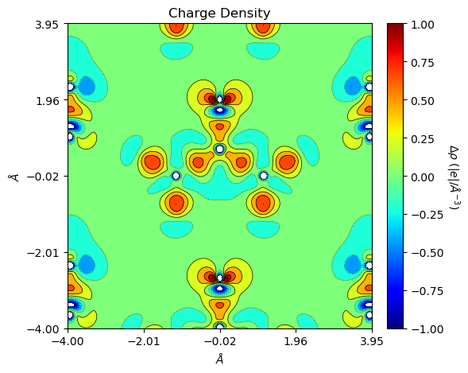
Get overlapped plots with option='overlay'. Note in this case inputs must be 1 or more 1*2 list of ScalarField and Trajectory objects.
With defalt levels the user can set different levels between 2 subplots. Otherwise only one is permitted.
[12]:
from CRYSTALpytools.topond import Laplacian, ChemicalGraph, ELF
from CRYSTALpytools.plot import plot_topond2D
import numpy as np
lap = Laplacian.from_file('topo_urea.SURFLAPP', output='topo_urea.out')
mgraph = ChemicalGraph.from_file('topo_urea.TRAJMOLG', output='topo_urea.out')
elf = ELF.from_file('topo_urea.SURFELFB', output='topo_urea.out')
fig = plot_topond2D([lap, mgraph], elf, option='overlay', colorplot=True,
lineplot=False, cpt_color='k', traj_color='tab:gray',
traj_linestyle='-', traj_linewidth=0.5, figsize=[8, 4],
title='A complex example', isovalues=None)
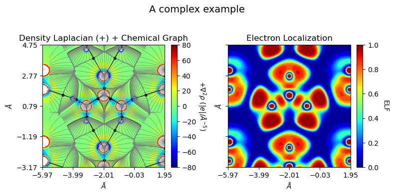
The following code block is only used to generate a nice thumbnail for the example gallary.
This is the end of the example notebook. For more details, please refer to the API documentations.
[1]:
import matplotlib.pyplot as plt
fig, ax = plt.subplots()
ax.imshow(plt.imread("./topo_thumbnail.png"))
ax.axis('off')
[1]:
(-0.5, 584.5, 461.5, -0.5)
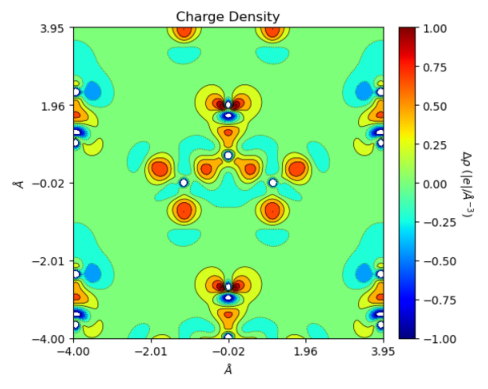